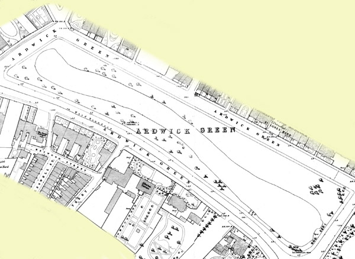
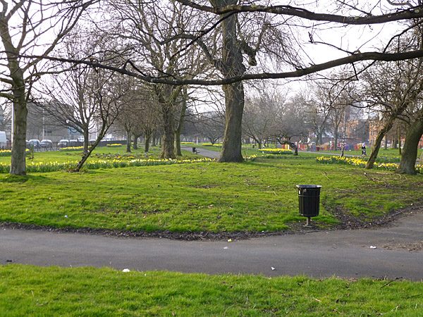

Never been to a National Park before? Many of us have discovered the joy, the necessity, of getting out into green spaces this year - on our own or with our families. We've found that being better connected to nature means we can be more. More healthy, more creative, more at ease. National Parks are inspirational, safe places to continue that journey...to explore more.
 here is also a map showing adwick park which shows where exactly it is located which will make it easier for you to find. the image displayed shows you the next greenpark in Manchester which features wooded hiking/biking paths, grassy meadows & a small lake with a nice watefall were residents can enjoy the view